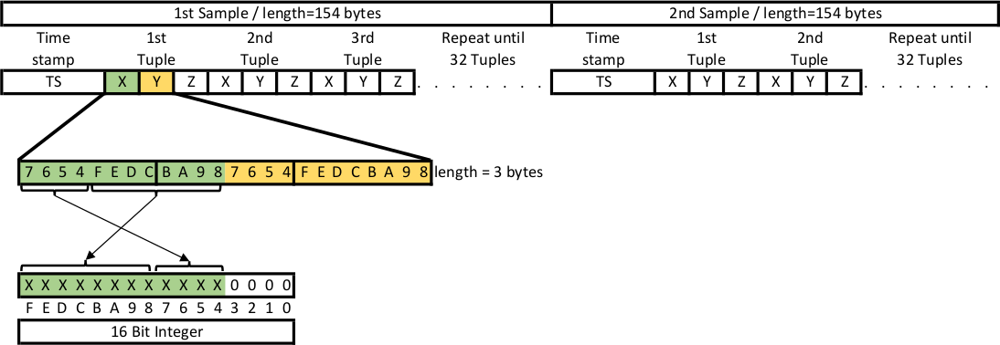

Chapter 9 BLE GATT Messages
Communication between Gateway and Sensor is done via Bluetooth Low Energy. It uses the Nordic UART service which itself uses the Bluetooth GATT protocol.
At the time of writing this document the Sensor supports two generations of messages.
- The first generation was defined in Wintersemester 2020/21. These messages are using header bytes starting at
0xFA. Messages which use are reserved by Ruuvi for proprietary messages. - Messages from the second generation use header bytes which are defined in the file ruuvi_endpoints.h.
9.1 General message structure
The general structure of a message is show in the following table.
| Header | Header | Operation | Parameter |
|---|---|---|---|
| destination | source | XX | Zero or more Parameter |
The first byte destination addresses the service which should process the message. The second byte source contains the source which originated the message.
9.2 Control messages
Control messages are sent to the sensor. They must be padded by nullbytes to a minimum length of 11 bytes. This requirement is introduced by the Ruuvi firmware. The padding bytes are not shown in the following description of the messages.
9.2.1 Start transmitting acceleration data
This message starts transmitting of acceleration data. It takes one parameter.
It’s concrete content is: 0x4A 0x4A 0x11 P1.
The parameter P1 controls the source of the data which should be returned.
| Parameter | Description |
|---|---|
0x01 |
Logged acceleration data from the database should be returned. |
Data is transmitted by using data messages. The transmission of the data is followed by a end of data message which signals the end of the data.
If acceleration logging is not active, the Sensor responds a status response containing error code RD_ERROR_INVALID_STATE.
9.2.2 Set configuration of acceleration sensor
This message is used to set the configuration of the acceleration sensor (LIS2DH12). The message takes 8 Parameters. The Sensor responds to this message with a status response. The parameters are as follows.
| Parameter | Description |
|---|---|
| P1 | Rate of sampling in smaples per second. Allowed values are 1Hz, 10Hz, 25Hz, 50Hz, 100Hz, 200Hz, 400Hz (use 0xC9). |
| P2 | Resolution in bits. Allowed values are 8, 10, 12. |
| P3 | Measuring range. Allowed values are 2G, 4G, 8G, 16G. |
| P4 | DSP function. See datasheet of LIS2DH12. |
| P5 | DSP parameter. See datasheet of LIS2DH12. |
| P6 | Mode of operation. Allowed values are 0xF2, 0xF3, 0xF4. See ruuvi_driver_sensor.h for explanation. |
| P7 | Frequency divider. This value is used to only save every P7-th value. |
| P8 | Reserved. Set to 0x00. |
All values from P1 to P7 can be set to 0xFF which means ‘do not change this values’.
The concrete content of this message is 0x4A 0x4A 0x02 P1 P2 P3 P4 P5 P6 P7 P8.
9.2.3 Read configuration of acceleration sensor
This message is used to read the configuration of the acceleration sensor (LIS2DH12). The message takes no parameters. The Sensor responds to this message by a response message which transmits the configuration.
The concrete content of this message is: 0x4A 0x4A 0x03.
9.2.4 Set system time
This message is used to set the RTC of the sensor to a timestamp which is part of the message. The time is expressed in milliseconds. It must be transmitted in little-endian byte sequence. The sensor responds to this message with a status response.
The concrete content of this message is 0x21 0x21 0x08 XX XX XX XX XX XX XX XX.
9.2.5 Read system time
This message is used to read the RTC of the sensor. The sensor responds to this message with a timestamp response.
The concrete content of this message is 0x21 0x21 0x09.
9.2.6 Control acceleration logging
This message is used to activate or deactivate acceleration logging. It takes one parameter. The sensor responds to this message using a status response. Activating acceleration logging when it is already active results in an error. Deactivating acceleration logging when it is not active results in an error.
The concrete content of this message is 0x4A 0x4A 0x08 P1. Where P1 can be a value from the following table.
| Parameter | Description |
|---|---|
0x00 |
Disable logging. |
0x01 |
Logging of acceleration data to flash. |
0x02 |
Logging of acceleration data to RAM. Used for logging of high frequency sampling. |
9.2.7 Query status of acceleration logging
This message is used to query the status of acceleration logging. The sensor responds to this message with a status response. If logging is active, the response contains the status RD_SUCCESS if logging is not active the status is RD_ERROR_NOT_INITIALIZED.
Streaming is not interpreted as active logging. In that case, this calls returns RD_ERROR_NOT_INITIALIZED.
The concrete content of this message is 0x4A 0x4A 0x09.
9.2.8 Query flash statistic
Flash usage is an important information. It is especially useful for determining when it is needed to download logged acceleration data from the sensor. This message is used to query some statistics about the usage of the internal flash memory of the Nordic NRF52832 MCU. It is implemented as an proprietary message. The sensor responds to this message with a flash statistic response.
The concrete content of this message is 0xFA 0xFA 0x0D.
9.2.9 Query boot counter
This message is used to query the boot counter. It is implemented as an proprietary message. The sensor responds to this message with a boot counter response.
The concrete content of this message is 0xFA 0xFA 0x0E.
9.3 Response messages
Every response message returns a status code as the result of the processing as the third byte. The following table shows the error conditions.
| Value | Error |
|---|---|
| 0 | RD_SUCCESS: No error |
| 1 | RD_ERROR_INTERNAL: Internal Error |
| 2 | RD_ERROR_NO_MEM: No Memory for operation |
| 4 | RD_ERROR_NOT_FOUND: Not found |
| 4 | RD_ERROR_NOT_SUPPORTED: Not supported |
| 5 | RD_ERROR_INVALID_PARAM: Invalid Parameter |
| 6 | RD_ERROR_INVALID_status: Invalid status, operation disallowed in this status |
| 7 | RD_ERROR_INVALID_LENGTH: Invalid Length |
| 8 | RD_ERROR_INVALID_FLAGS: Invalid Flags |
| 9 | RD_ERROR_INVALID_DATA: Invalid Data |
| 10 | RD_ERROR_DATA_SIZE: Invalid Data size |
| 11 | RD_ERROR_TIMEOUT: Operation timed out |
| 12 | RD_ERROR_NULL: Null Pointer |
| 13 | RD_ERROR_FORBIDDEN: Forbidden Operation |
| 14 | RD_ERROR_INVALID_ADDR: Bad Memory Address |
| 15 | RD_ERROR_BUSY: Flash Busy |
| 16 | RD_ERROR_RESOURCES: Not enough resources for operation |
| 17 | RD_ERROR_NOT_IMPLEMENTED: Not implemented yet |
| 18 | RD_ERROR_SELFTEST: Self-test fail |
| 19 | RD_STATUS_MORE_AVAILABLE: Driver has more data queued |
| 20 | RD_ERROR_NOT_INITIALIZED: Driver is not initialized. |
| 21 | RD_ERROR_NOT_ACKNOWLEDGED: Ack was expected but not received |
| 22 | RD_ERROR_NOT_ENABLED: Driver is not enabled |
9.3.1 Status response
This message is used to return a status code to the gateway if no other information is available.
| Header | Header | Operation | Status |
|---|---|---|---|
| destination | source | operation | SS |
Where SS is the status code. See above table.
The header bytes destination and source are the same bytes from the control message but in reversed order. The third byte operation is equal to the byte operation from the control message which caused this response.
9.3.2 End of data message
This message is sent to the gateway after returning data. It signals the end of the transmission. This message contains nine parameters. The current configuration of the acceleration sensor are the first eight parameter. The structure is the same as shown in the set configuration message. The CRC16 value of the transmitted data is the 9th parameter.
To compute the CRC16 value the polynom 0x11021 with the initial value 0xFFFF is used. The output bytes are not reversed and not XOR’d. The CRC value is of size 2 bytes. It is transfered in little-endian byte sequence.
The concrete content of this message is 0x4A 0x4A 0x11 SS P1 P2 P3 P4 P5 P6 P7 P8 CRC1 CRC2.
Where SS is the status code. See above table.
9.3.3 Configuration response
This message is sent to the gateway after requesting the current configuration. The message contains eight parameters containing the current configuration. If the status code signals an error the transmitted values is undefined.
The concrete content of this message is 0x4A 0x4A 0x03 SS P1 P2 P3 P4 P5 P6 P7 P8. The values P1 to P8 map to the same values as shown in set configuration message.
Where SS is the status code. See above table.
9.3.4 Timestamp response
This message is sent to the gateway after requesting the system time. The message contains one parameter. The parameter is a 8 byte value containing the current timestamp. The bytes are transferred in little-endian sequence. If the status code signals an error the transmitted value is undefined.
The concrete content of this message is 0x21 0x21 0x09 SS XX XX XX XX XX XX XX XX. Where SS is the status code.
9.3.5 Flash statistic response
The sensor responds to the control message for querying the flash statistic using the following response. Most values were retrived using fds_stat() from Nordic Softdevice. The message contains 11 parameters.
| Byte | Value | Description |
|---|---|---|
| 1 | 0xFB |
Header |
| 2 | 0x0D |
Header |
| 3 | SS | Status byte regarding this operation. |
| 4 | LS | Status regarding the background logging operation. |
| 5 | start | Unused 0xFF. |
| 6 | end | Unused 0xFF. |
| 8 | size | Unused 0xFF. |
| 9-10 | valid records | The number of valid records. |
| 10-11 | dirty records | The number of deleted (“dirty”) records. |
| 12-13 | words reserved | The number of words reserved. |
| 14-15 | words used | The number of words written to flash, including those reserved for future writes. |
| 16-17 | largest continious | The largest number of free contiguous words in the file system. |
| 18-19 | freeable words | The largest number of words that can be reclaimed by garbage collection. |
Multi byte values are transmitted in little-endian byte sequence.
9.3.6 boot counter response
This message is sent to the gateway after requesting the boot counter. The message contains one parameter. The parameter is a 4 byte value containing the value. The bytes are transferred in little-endian sequence. If the status code signals an error the transmitted value is undefined.
The concrete content of this message is 0xFB 0x0E SS XX XX XX XX. Where SS is the status code.
9.4 Data message
Data messages are used to transfer logged acceleration data. A data message starts with the byte 0x11. After the start byte there follows up to 19 bytes of data.
The concrete content of this message is 0x11 XX XX XX XX XX XX XX XX XX XX XX XX XX XX XX XX XX XX XX.
The data is returned in blocks of 32 tuples of x-, y-, z-values. Every block is preceded by the timestamp when the interrupt occured which this block generates. To decode the data block the information about the resolution and the scale is needed. This information is transmitted by the end of data message. All values are transferred in little-endian byte sequence.
After de-compacting every value must be interpreted as the most significant part of an 16 bit wide signed integer. To get the real acceleration value from this intermediate value multiply it by one of the following factors.
| Scale / Resolution | 8 bit | 10 bit | 12 bit |
|---|---|---|---|
| 2G | \(\frac{16}{256*1000}\) | \(\frac{4}{64*1000}\) | \(\frac{1}{16*1000}\) |
| 4G | \(\frac{32}{256*1000}\) | \(\frac{8}{64*1000}\) | \(\frac{2}{16*1000}\) |
| 8G | \(\frac{64}{256*1000}\) | \(\frac{16}{64*1000}\) | \(\frac{4}{16*1000}\) |
| 16G | \(\frac{192}{256*1000}\) | \(\frac{48}{64*1000}\) | \(\frac{12}{16*1000}\) |
9.4.1 12 bit data format
In 12 bit resolution mode two values are transmitted inside 3 bytes. See following figure.

9.4.2 10 bit data format
In 10 bit resolution mode four values are transmitted inside 5 bytes. See following figure.

9.4.3 8 bit data format
In 8 bit resolution mode every value is transmitted seperatly. See following figure.

9.5 Communication example
The following figure shows an example communication.

9.6 Streaming
Streaming of acceleration data can be activated to retrieve acceleration data at high sampling frequencies. To enable this operation mode logging must be currently disabled. Streaming can not be persistent enabled. It remains active until deactivation using Control acceleration logging command or until power cycle.
If streaming is active but no one is connected to BLE GATT service energy consumption is not significant higher than operating the acceleration sensor at this sampling frequency without logging the data.
Transfer of sampled data is automatically startet if someone is connected to BLE GATT service. In this case, the data is immediately send to the gateway using the following structure. The concrete content of a message is the following.
0x11 TT TT TT TT TT TT TT TT XX XX XX XX XX XX XX XX XX
Each message contains two parameters:
| Parameter | Description |
|---|---|
TT TT TT TT TT TT TT TT |
Timestamp of sampling the following value. |
XX XX XX XX XX XX XX XX XX |
Acceleration values. Each message transports two tuples of X-, Y-, Z-Acceleration values in compacted format. I.e. without unused bits. |
Multi byte values are transmitted in little-endian byte sequence. This is relevant for timestamp and acceleration values.
To decode the acceleration values one must know the current configuration of the sensor. This information is not part of this message. So, one must save this information from the setup of streaming.